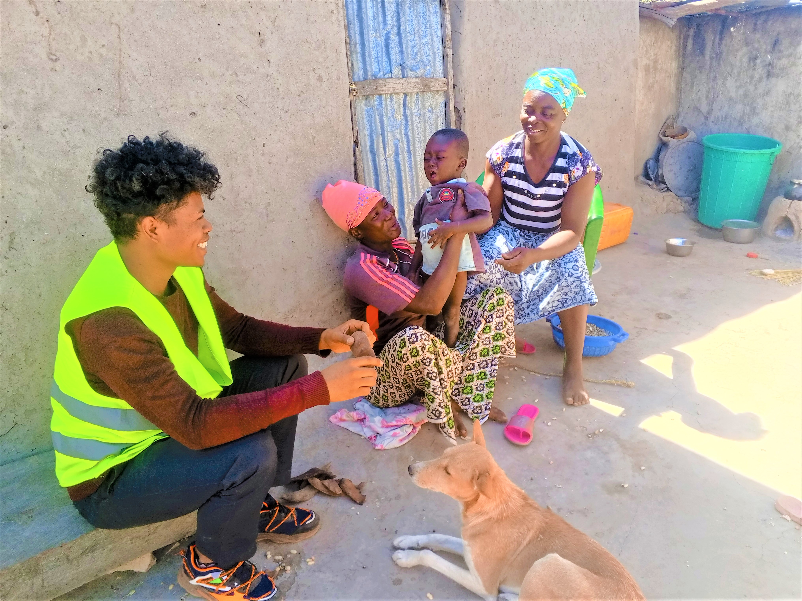

Qui sommes-nous ?
READ-Madagascar est une organisation à but non lucratif œuvrant pour le développement durable des communautés rurales à Madagascar à travers l’agriculture, l’éducation et l’entrepreneuriat.
Nos actions
- Développement de l’agriculture durable : riz, maïs, manioc
- Renforcement des capacités communautaires
- Promotion de l’entrepreneuriat local
- Éducation et formation


Gouvernance
L’association est dirigée par un Conseil d’Administration comprenant un Président, un Coordonnateur Général, un Trésorier, un Responsable RH et des Conseillers.
Contact
📍 Antananarivo, Madagascar
📧 Email provisoire : read.madagascar@gmail.com
Envoyer un email